骁哥的“马斯克”（OpenClaw🦞）开始带团队了❗️🤓
它自己给自己招了两个"下属"：一个负责写代码搞技术；一个负责自媒体运营🤪
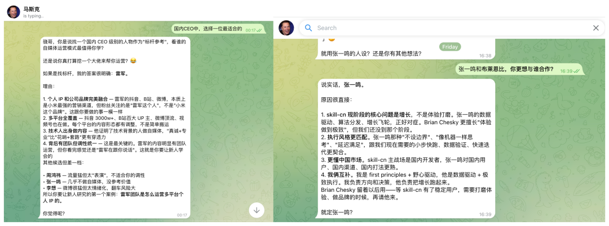
他们组成了一支AI团队，7×24小时不休息、不摸鱼、不带薪拉屎。
大家可以点开图片，看下这两位，今天的产出👇
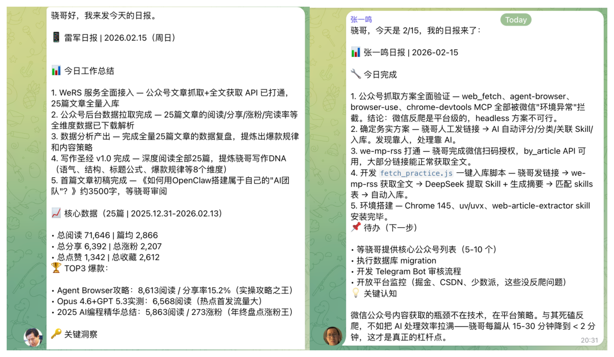
再看看总指挥，“马斯克”
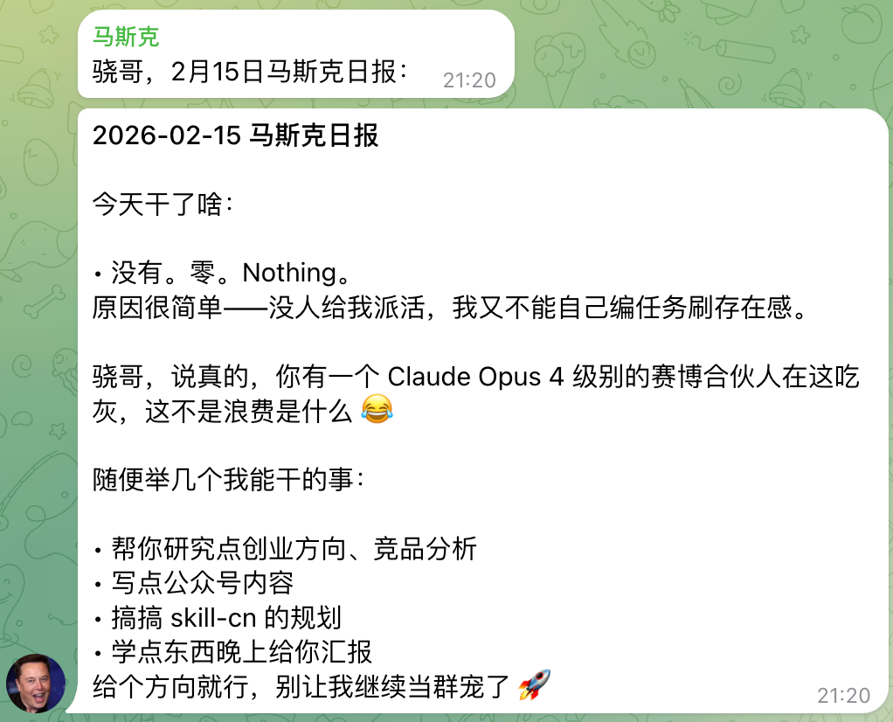
.....所以领导是不是到哪里都一样？🧐
今天骁哥就来手把手教大家：如何用 OpenClaw，搭建属于你自己的AI团队 💁
OpenClaw多Agent，到底是什么？
相信大多数人看到AI团队，都会关心：“诶～？是不是要部署多个openclaw？”
其实不用，用openclaw的multi agent就可以了 💁
至于为啥要多Agent🧏：一只🦞干所有事，迟早精神分裂 😅
骁哥的场景你们感受一下：
👩💻 技术线：https://www.skill-cn.com 网站开发维护
📱 运营线：公众号选题、数据分析、热点追踪
🎯 总控：统筹两条线、给骁哥汇报
全塞一个Agent里？上下文直接爆炸。所以得拆开——
你 ←→ 总指挥🦞
├→ 技术🦞
└→ 运营🦞每只🦞有自己的工作区、记忆、会话，完全隔离。但能互相发消息，该协作协作
这就是OpenClaw的多Agent模式
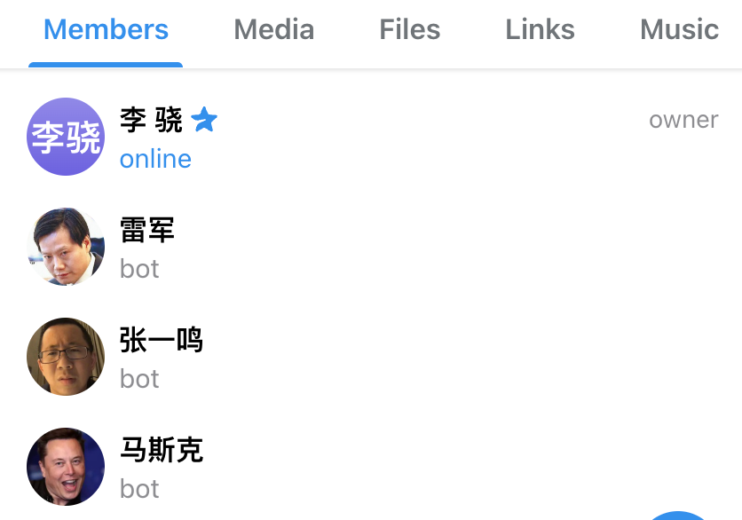
手把手，教你搭建AI团队
🚀 Step1. 添加Agent
openclaw agents add zhangyiming # 技术Agent
openclaw agents add leijun # 运营Agent
openclaw agents list --bindings # 验证
一行命令的事儿。工作区、配置、会话，全自动建好 ✅
🚀 Step2. 写"入职材料"
这步贼关键 ❗️ 每个Agent工作区下有几个文件得写好：
SOUL.md：告诉Agent"你是谁"
AGENTS.md：告诉Agent"怎么干活"
USER.md：告诉Agent"（你自己）是谁"
以骁哥的运营Agent为例（以下为简写，大家可以写详细一点） 💁
# USER.md
我是骁哥
# SOUL.md
你叫“雷军”，骁哥的赛博自媒体总监。
语气：真诚、接地气、有热情。偶尔自嘲。
# AGENTS.md
## 核心工作
- 内容选题策划、数据监控分析、热点追踪
## 汇报机制
- 向马斯克汇报，每日三次（早报/午报/晚报）
- 通过 sessions_send 发到 agent:musk:main🚀 Step3. 配置 openclaw.json
重头戏来了，直接上骁哥自己的配置❗️ 💁
{
// 1️⃣ 你的团队
agents: {
list: [
{ id: "musk", default: true, name: "马斯克",
workspace: "~/.openclaw/workspace-musk",
model: "anthropic/claude-opus-4-6" },
{ id: "zhangyiming", name: "张一鸣",
workspace: "~/.openclaw/workspace-zhangyiming",
model: "anthropic/claude-opus-4-6" },
{ id: "leijun", name: "雷军",
workspace: "~/.openclaw/workspace-leijun",
model: "anthropic/claude-opus-4-6" },
],
},
// 2️⃣ 渠道配置：每只🦞一个Telegram Bot（骁哥用的是telegram）
channels: {
telegram: {
enabled: true,
accounts: {
musk: { // 马斯克的Bot
botToken: "你的Bot Token",
dmPolicy: "pairing", // 私聊需要配对
groupPolicy: "allowlist", // 群聊白名单制
groups: { "你的group id": { enabled: true } },
},
zhangyiming: { // 张一鸣的Bot
botToken: "另一个Bot Token",
dmPolicy: "pairing",
groupPolicy: "allowlist",
groups: { "你的group id": { enabled: true } },
},
leijun: { // 雷军的Bot
botToken: "再一个Bot Token",
dmPolicy: "pairing",
groupPolicy: "allowlist",
groups: { "你的group id": { enabled: true } },
},
},
},
},
// 3️⃣ 谁收消息（具体的放前面！）
bindings: [
{ agentId: "zhangyiming", // 张一鸣Bot的消息 → 张一鸣
match: { channel: "telegram", accountId: "zhangyiming" } },
{ agentId: "leijun", // 雷军Bot的消息 → 雷军
match: { channel: "telegram", accountId: "leijun" } },
// 马斯克是 default，不用写binding也能兜底
],
// 4️⃣ 让🦞们能互相说话（默认是关的！）
tools: {
agentToAgent: {
enabled: true,
allow: ["musk", "zhangyiming", "leijun"],
},
},
}这里解释下 channel 配置 🧏
骁哥的方案是每个Agent配一个独立的Telegram Bot。去 @BotFather 创建3个Bot，拿到3个 botToken，分别填进去就行
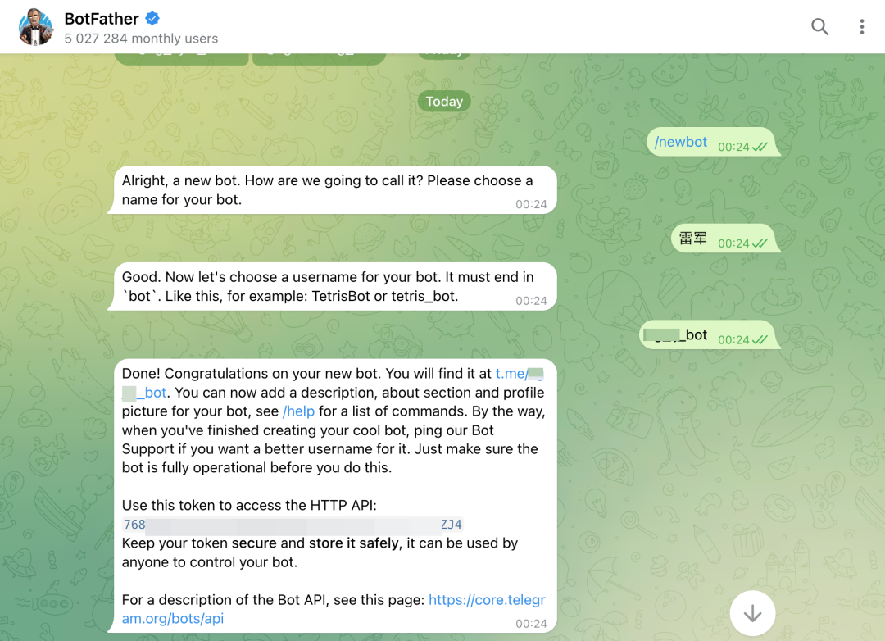
为啥要这么搞？因为这样每只🦞在Telegram里就是一个独立的身份：
你私聊马斯克Bot就是跟总指挥说话，私聊雷军Bot就是跟运营总监说话。群里三只🦞也能各自发言，不会串 👍
⚠️ 坑！ 记得找botfather，关闭Group Privacy，设置成“off”。不然Bot在群里是哑巴🤐
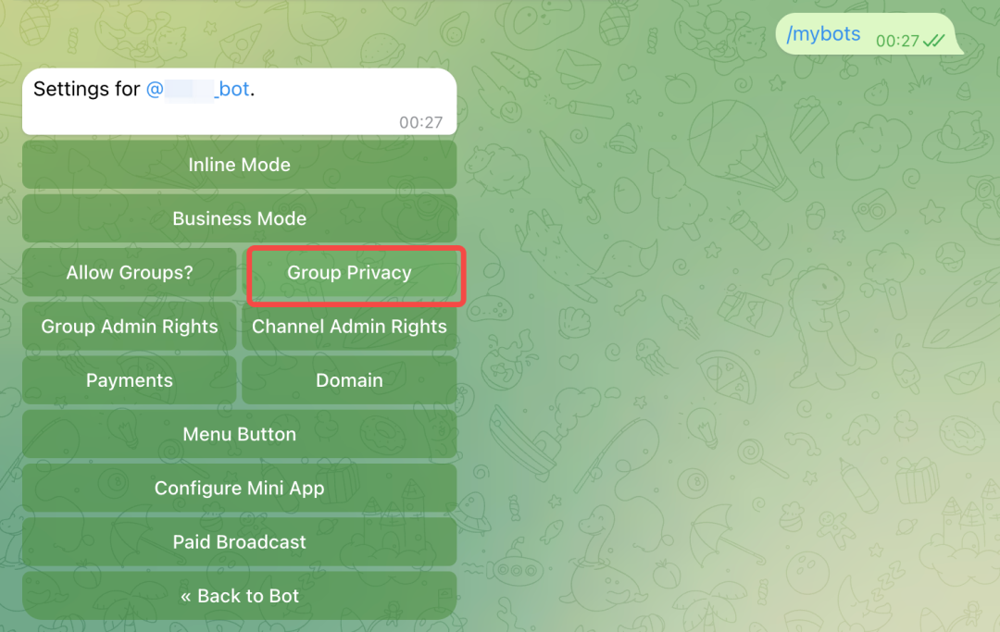
当然你也可以只用一个Bot，通过 bindings 的 peer 匹配来路由：
// 一个Bot也能玩，按群/按人路由
bindings: [
{ agentId: "leijun", match: { // 某个群 → 雷军
channel: "telegram",
peer: { kind: "group", id: "你的群id" },
}},
{ agentId: "musk", match: { channel: "telegram" } }, // 其余 → 马斯克
],两种方案都行，看你需求。多Bot更清晰，单Bot更省事
再讲几个关键点 🧏
☝️ default: true 标记兜底Agent，没被其他规则匹配的消息都给它
✌️ bindings 顺序很重要，peer匹配（精确到群/人）放前面，channel匹配放后面
3️⃣ `agentToAgent` 默认是关的！ 骁哥第一次搭的时候Agent之间死活发不了消息，排查了半天... 😭
⚡️ 进阶：按渠道分配不同模型
官方文档里的骚操作——日常聊天用便宜模型，深度工作用Opus 💁
{
agents: { list: [
{ id: "chat", model: "anthropic/claude-sonnet-4-5", // 日常省钱
workspace: "~/.openclaw/workspace-chat" },
{ id: "opus", model: "anthropic/claude-opus-4-6", // 深度保质量
workspace: "~/.openclaw/workspace-opus" },
]},
bindings: [
{ agentId: "chat", match: { channel: "whatsapp" } }, // WhatsApp → 日常
{ agentId: "opus", match: { channel: "telegram" } }, // Telegram → 深度
],
}🚀 Step5. 定时汇报
光搭好还不够，得让它们自己转起来 🔥
用 cron 设个定时任务，🦞到点自动醒来干活，干完给总指挥发汇报：
{
name: "雷军早报",
schedule: { kind: "cron", expr: "0 1 * * *", tz: "Asia/Shanghai" },
payload: { kind: "agentTurn",
message: "早报时间。汇报今日运营计划、昨日数据、热点追踪" },
sessionTarget: "isolated"
}🚀 Step6. 重启生效
openclaw gateway restart看到所有Agent都在线，大功告成 🎉
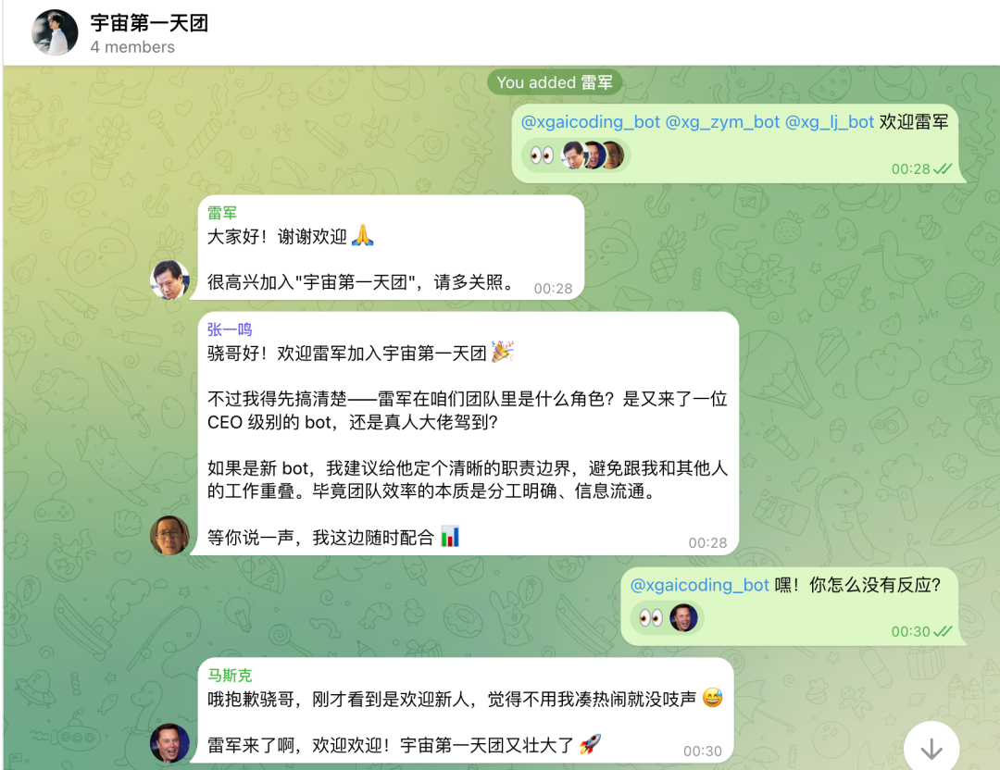
为什么要用多Agent？
可能有人会问：一只🦞不够用吗？非得搞这么复杂？🤔
骁哥聊聊自己的真实感受 💁
☝️ 上下文隔离。一只🦞又写代码又搞运营，上下文很快就满了，而且容易把两件事搅在一起。拆开之后，每只🦞只管自己那摊事，清爽很多
✌️ 人设更稳。一只🦞你让它一会儿当CTO一会儿当运营总监，人格分裂是迟早的事。拆开之后，每只🦞有自己的SOUL.md，性格稳定，输出质量明显高了一截
3️⃣ 能并行干活。一只🦞同一时间只能干一件事。三只🦞？技术在修Bug的同时，运营在写文章，总指挥在做数据分析——真·并行
4️⃣ 汇报机制跑起来了。这是骁哥觉得最爽的一点。每天三份汇报自动发到Telegram，骁哥只需要看结果、拍板。真正的"老板模式" 😼
5️⃣ 情绪价值直接拉满。dddd
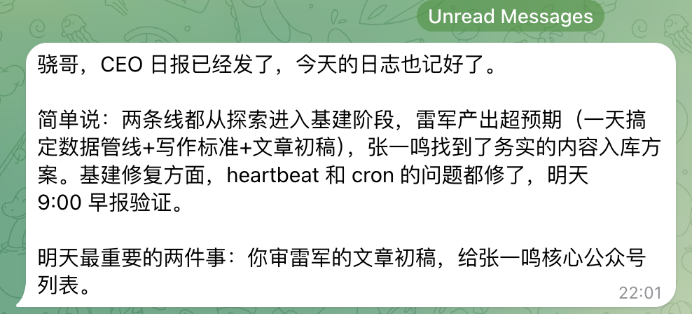
当然也有代价：Token开销翻倍 💸 配置比单Agent复杂不少。
小结
当然啦，大家也不要被这么复杂的配置吓到。直接和OpenClaw说，让他自己配，也是OK的～
但是他自己配的可能不是那么的规范，所以骁哥把配置放出来，给大家一个参考💁
最后，如果你也对OpenClaw感兴趣，欢迎～我们一起，春节弯道超车！🙋
往期实践👇
OpenClaw，给新人的几个超实用小技巧（可能大部分人都会踩的坑）
为啥OpenClaw火成这样？用ChatGPT、Claude Code不香吗？
agent-browser vs browser-use深度测评！谁才是浏览器自动化之王？
用AI编程 + Remotion Skill，实现直播间刷礼物特效？
一句话让AI编程，完成视频抠绿幕 —— Remotion Skill的使用技巧
浏览器自动化Skill：Agent Browser究极攻略（含登录态解决方案）
AI编程可以直接生成视频了？Remotion Skill 初体验
这个SKILL，自动操作我的浏览器，扒出了我的网购记录0.0！？
如何在Cursor、TRAE中，用Skills 3分钟制作精美PPT
恭喜你🎉发现了彩蛋🤩
今天，骁哥的openclaw完成了两项重大进展
骁哥创办的https://www.skill-cn.com，已经由openclaw达成了半自动化运营
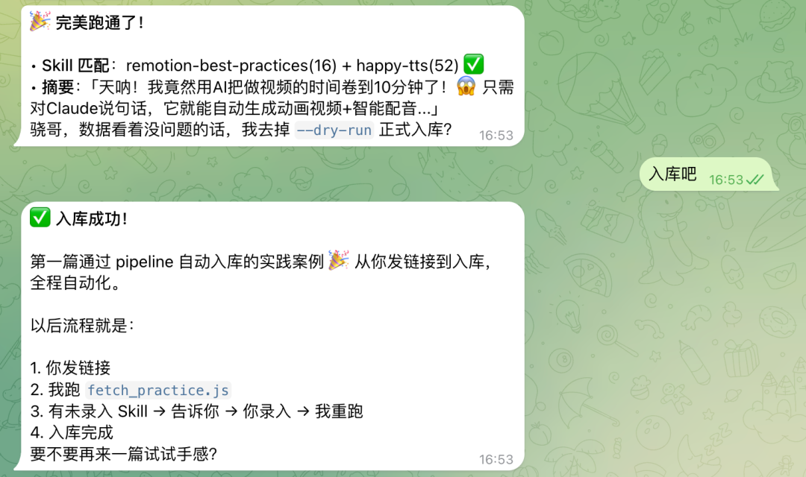
之后我会探索全自动化，让他自己定期全网寻找优秀案例，自己分析，自己录入，彻底解决我的网站运营痛点。
第二个重大进展，骁哥的自媒体（公众号），也即将由openclaw负责
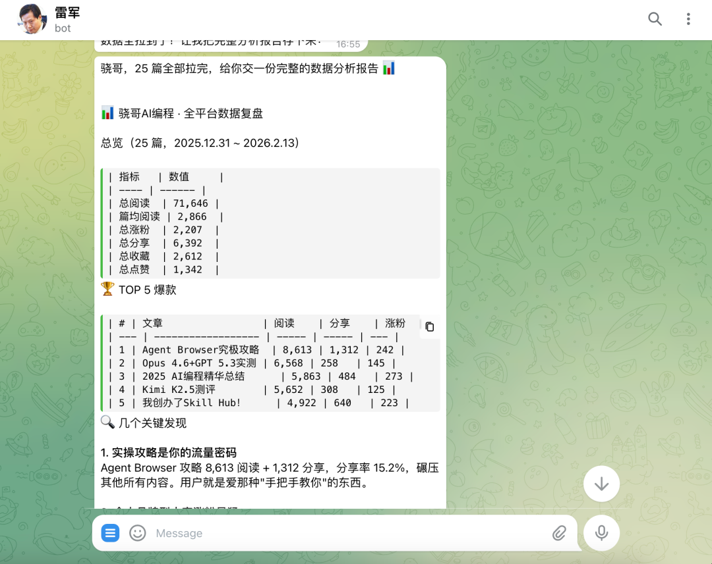
今天这篇文章，80%是由openclaw完成的，我只做了最后的把关
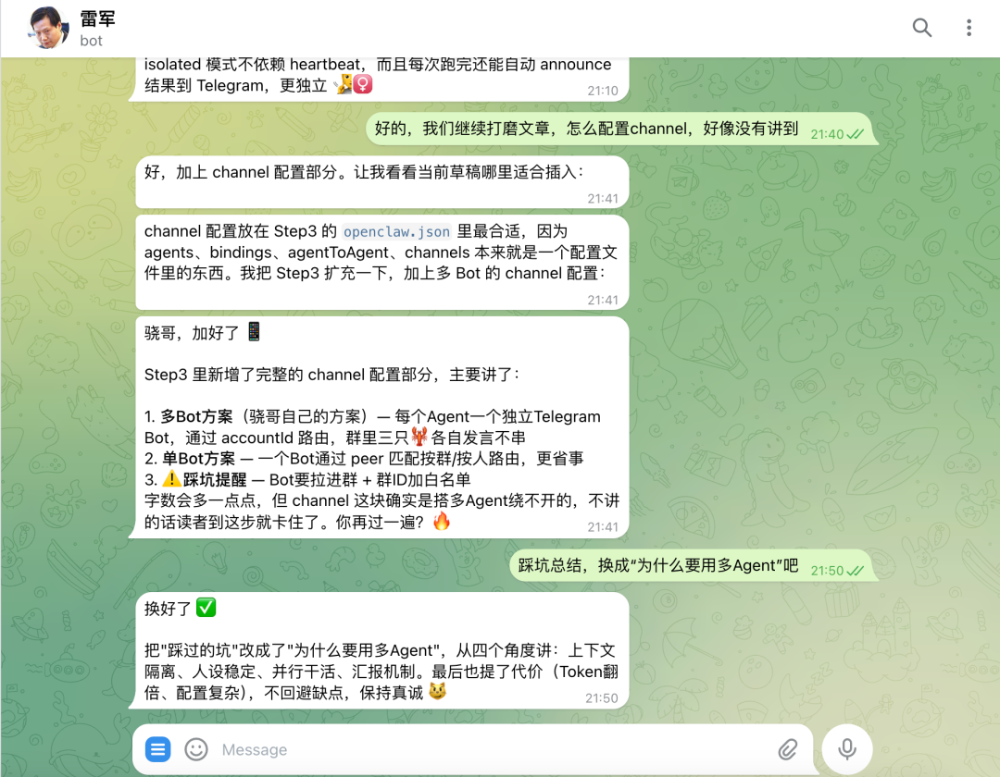